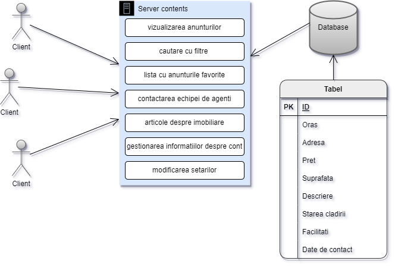

1. Introducere
1.1 Scop
Achizitia unui imobil reprezinta un proces complex si elaborat, de cele mai multe ori fiind o decizie grea pentru cumparator.
Astfel, aplicatia noastra Real Estate vine in ajutorul celor interesati de aceste servicii simplificand procesul de alegere al viitoarei lor locuinte.
Scopul acestui site web este de a oferi clientilor o interfata prietenoasa si usor de manevrat, facilitand intreg procesul de achizitie.
1.2 Conventiile documentelor
Pentru realizarea acestui document s-au folosit urmatoarele conventii:
1.3 Publicul vizat si sugestii de lectura
Acest document are ca tinta cititorii din randul profesorilor universitari, dar si utilizatorilor doritori de a intelege structura pe care a fost construit proiectul.
In continuare, in acest document se pot gasi atat motivele, cat si ideile utilizate pentru implementarea aplicatiei si pentru detaliile de implementare ale fiecarei pagini.
1.4 Scopul produsului
Scopul acestui proiect este de a realiza un sistem de centralizare al imobiliarelor puse la vanzare.
El doreste integrarea anunturilor existente pe piata din diverse orase din Romania, pentru a facilita o cautare si alegere mai eficienta a acestora si pentru a obtine un raport calitate-pret cat mai bun.
1.5 Referinte
Referintele folosite in cadrul acestui document sunt urmatoarele:
2. Descrierea
2.1 Perspectiva produsului
Produsul nostru este unul autonom care inglobeaza functionalitatile deja existente pe piata in cadrul altor aplicatii care nu satisfac nevoile cumparatorului.

2.2 Functiile produsului
Printre multiplele functii ale produsului putem enumera vizulizarea anunturilor imobiliare dintr-un judet selectat, cautarea apartamentelor si filtrarea acestora pe baza unor caracteristici preferate de utilizator.
O alta functionalitate importanta pentru experienta utilizatorului este reprezentata de lista de favorite in cadrul careia cumparatorul isi poate salva apartamanetele de care este interesat pentru a le putea accesa cu usurinta in viitorul apropiat.
2.3 Clasele si caracteristicile utilizatorului
Cele doua clase de utilizatori sunt reprezentate de utilizatori autentificati si utilizatori neautentificati.
Prima categorie cuprinde persoanele interesate de cumpararea unui imobil, acestea dispunand de multiplele functionalitati oferite de site. Acesta isi poate gestiona contul personal si a listei de imobiliare preferate.
De asemenea, el va avea optiunea de a-si filtra cautarile si personaliza setarile, iar in ajutorul alegerii pe care o au de facut vor veni si diverse articole relevante subiectului postate pe blogul paginii. Totodata, ei pot accesa informatii despre dezvoltatorii proiectului.
Cea de-a doua categorie include atat persoanele indecise asupra utilizarii aplicatiei noastre, cat si viitorii vanzatori de apartamente pe care ii intereseaza sa-si studieze concurenta. Aceste persoane vor putea realiza cautari filtrate, vizualiza blogul cu articole si generalitatile despre propritarii paginii.
In momentul incercarii folosirii celorlalte functionalitati, utilizatorii vor fi invitati sa se inregistreze pe site-ul nostru.
2.4 Mediul de operare
Site-ul este dezvoltat pe platforma Windows si destinat utilizarii in browser. Datele necesare functionarii acestuia sunt stocate folosind baze de date relationale interogate via SQL.
2.5 Constrangeri de implementare si design
In realizarea proiectului am ales o paleta de culori bazata pe nuante de bej care transmit eleganta si formalitate. Am facut aceasta alegere deoarece aceasta culoare este asociata cu echilibrul, generand in acelasi timp o senzatie de calm si relaxare.
Deoarece site-ul nostru vrea sa transforme o casa in acasa, starea generala pe care el o transmite este de liniste si confort.
Designul abordat este unul simplist, fapt care denota atat neutralitatea si profesionalismul echipei noastre, cat si dorinta de a tinti o categorie de varsta cat mai mare.
Fundalul paginilor este ales in concordanta cu tema proiectului, fiind unul modern si prietenos.
2.6 Ipoteze si dependente
Intrucat site-ul Real Estate inglobeaza functionalitati existente in cadrul altor aplicatii nu la fel de complexe, el depinde de unele informatii puse la dispozitie de aceste aplicatii.
Un exemplu concludent in acest sens consta in modul de parsare al crawler-ului folosit pentru a extrage anunturi imobiliare pe alte site-uri de profil. In cazul in care acestea si-ar schimba modul de structurare al datelor, crawler-ul ar fi afectat ducand la transmirea eronata a informatiilor despre un anunt.
4. Caracteristicile sistemului
4.1 Home Page
Pagina Home reprezinta pagina principala pe care ajunge utilizatorul dupa ce se inregistreaza sau fara a se inregistra daca utilizeaza butonul Home din pagina de login/register.
Odata ajuns pe pagina principala, utilizatorul are optiunea de a schimba pagina pe care se afla utlizand meniul sau sa inceapa cautarile pentru un imobil.
Pentru realizarea cautarilor avem implementate doua metode care urmaresc nivele de detalii diferite.
Prima metoda este cea de cautare in detaliu, care implica cautarea pe baza datelor introduse de utilizator, adica oras, tipul de imobil si un pret maxim pentru o filtrare mai in detaliu a anunturilor.
A doua metoda este cea de cautare rapida, ea implica utilizarea unei harti interactive care permitere alegerea, cu mouse-ul sau utilizand touch screen-ul, a unui judet care va fi utilizat pentru filtarea rezultatelor vazute de utilizator.
Ambele metode de alegere a anunturilor dorite ne redirectioneaza catre pagina Announces in care urmeaza sa fie listate aunturile.
4.2 Announces
In aceasta pagina se pot gasi anunturi despre imobiliare de vanzare, fiecare anunt fiind insotit de cateva detalii, cum ar fi: suprafata, pret, oras, adresa, date de contact, starea cladirii si facilitati.
Pentru filtrarea anunturilor dupa interesele si preferitele utilizatorului, pozitionata in partea de sus a paginii se afla bara de cautare unde se poate seta orasul, tipul de imobil si pretul maxim.
4.3 Favorites
Fiecare utilizator inregistrat in aplicatie va putea sa-si salveze anunturile peste care sa vrea sa revina ulterior utilizand pagina Favorites.
In cadrul aceste pagini utilizatorul are acces la o lista cu anuntuti favorite pe care a ales sa le salveze in timpul cautarii de imobiliare facuta in pagina Announces.
Din lista respectiva, o sa fie posibila intoarcerea spre pagina de anunturi in care sa poata fi viziualit din nou imobilul mai in detaliu.
In cazul dorintei de a sterge un element din lista, fiecare anunt prezent acolo va avea posibilitatea de a fi eliminat.
Pentru usurinta navigarii prin lista, se va folosi un meniu de filtrare al anunturilor salvate.
4.4 Blog
Aceasta pagina este destinata culturalizarii viitorilor proprietari de imobile. In cadrul acesteia, vizitatorii site-ului vor putea citi diverse articole scrise de specialisti in domeniu.
Interesul acestei pagini este de a ajuta cumparatorul sa isi cunoasca nevoile pentru a-si alege locuinta cat mai potrivita.
Articolele vor fi organizate cronologic, astfel cele mai recente vor fi cel mai usor de accesat.
4.5 Login Page
O pagina ce poate fi accesata atat de persoanele care au deja un cont pe platforma, cat si de cele care nu au, este cea de logare/inregistrare.
In functie de intentia pe care utilizatorul o are, ii sunt puse la dispozitie doua formulare.
In formularul destinat celor ce detin deja un cont campurile de completat sunt: username si parola, cu o functionalitate speciala de resetare a parolei in cazul in care aceasta a fost uitata.
Totodata, exista posibilitatea de conectare prin intermediul API Google sau Facebook.
Datele necesare pentru inregistrarea pe site-ul nostru web sunt username, adresa de email si parola (confirmare parola). Atunci cand utilizatorul se inregistreaza cu acest cont nou, el accepta implicit politica de prelucrare a datelor.
Acesti termeni si conditii se afla intr-o alta pagina ce poate fi vizitata accesand linkul pozitionat sub formular.
In cadrul paginii, in coltul din stanga sus, se afla un buton care ofera posibilitatea de intoarcere catre pagina Home.
4.6 My account
<<<<<<< HEAD
Pagina My Account este accesibila din cadrul meniului principal, utilizatorul fiind redirectionat pe aceasta dupa apasarea ultimului buton din meniu.
In cadrul acesteia, clientul isi poate vizualiza si personaliza datele legate de contul lui. Spre exemplu, isi poate vedea si schimba numele de utilizator sau adresa de email si isi poate reseta parola.
De asemenea, tot din cadrul acestei pagini, utilizatorul isi va putea incarca si schimba poza de profil asociata lui, aceasta optiune adaugand o nota de personalitate contului acestuia.
La finalul navigarii clientului pe site-ul nostru, el se va putea deconecta prin intermediul butonului de Logout ce se gaseste in partea de jos a acestei pagini.
=======
>>>>>>> c62ee36eab254dfded6e2ca106c435c8e40e4241
4.7 Settings
Aceasta pagina este nu poate fi accesata din cadrul meniului principal, ea fiind vizibila in momentul selectarii butonului Settings din cadrul paginii My Account.
Rolul acesteia este de a-i permite utilizatorului sa schimbe modul de navigare in cadrul acestui site.
El va putea sa isi aleaga urmatoarele: tema culorilor, avand la dispozitie tema luminoasa si tema intunecata; limba in care este afisat textul de pe pagini, in limba romana sau in linba engleza; acceptul lui privind termenii si conditiile de functionare ale site-ului, in cazul unui dezacord contul lui va fi sters in urma unei atentionati.
Tot din cadrul acestei pagini, utilizatorul isi va putea sterge contul si toate datele asociate acestuia.
4.8 About Us
In cadrul paginii About Us vor fi prezente informatii despre creatorii aplicatie web.
Va fi prezenta o scurta descriere a aplicatiei, care o poza a fiecarui participant la poriect si cateva detalii despre acesta.
De asemenea, aici se va afla si un buton care sa ne redirectioneze catrea pagina documentatiei proiectului, pentru utilizatorii care doresc sa intre mai in detaliu in diferite aspecte ale temei si implementarii aplicatiei.